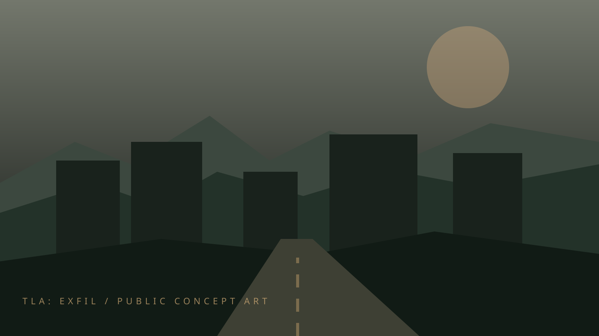

World direction · Concept
Alamo Falls
A fictional urban anchor surrounded by damaged roads, outlying districts and changing terrain.
The Long After / Official development site
SURVIVE · SEARCH · UNCOVER · REBUILD
A post-collapse survival experience in an original Central Texas-inspired world. Step into abandoned places, face the unknown, and decide what matters enough to carry home.
The original five-board website, rebuilt around TLA: EXFIL. Select a chapter to explore the public-facing vision.
An original region, broken infrastructure and contested routes.
Weapons, gear and the choices that define survival.
Transport and industrial equipment exploration.
Environmental sound, silence and in-world music direction.
From foundations through testing and public release readiness.
The fictional Alamo Falls setting draws from Central Texas's roadways, rugged edges, weathered neighborhoods and industrial spaces. Its environments are designed to tell stories without revealing the mysteries at their center.

A fictional urban anchor surrounded by damaged roads, outlying districts and changing terrain.
Signs of daily life persist amid deserted infrastructure, wilderness and uncertain passage.
Ordinary landmarks take on unfamiliar meaning when supplies are scarce and every sound matters.
This public site deliberately keeps major revelations, hidden identities and unreleased narrative material out of view.
Equipment choices are part of the survival vision. The featured imagery explores the visual language of the game's arsenal; these are not proof of final playable weapons or approved production models.
Compact personal equipment and practical handling.
Distinct silhouettes and survival-focused kit design.
Ammunition, preparation and resource-management direction.
From utility transport to industrial machinery, the vehicle gallery preserves exploratory concept work. Vehicle availability, operation and systems are not represented as completed gameplay.
Transport ideas for damaged roads and difficult terrain.
Heavy equipment as part of a world shaped by human infrastructure.
Machines that tell the story of construction, repair and abandonment.
The sound direction balances atmosphere, environmental detail and uncertainty. Distant machinery, wind, footsteps and radio transmissions are part of the intended audio identity.
Audio can give abandoned rooms, open land and damaged infrastructure a sense of place.
Radio and music are being developed as atmospheric elements. No audio files or tracks are published or playable on this page.
This public roadmap is intentionally high-level. Development claims require tested evidence; there is no promised release date, completion percentage or implied finished multiplayer service.
Core technology, game controls, player systems, reliability and testing.
Refining the exploration, equipment, threat and return-to-safety gameplay experience.
Weapon feel, believable environments, infected behavior and sound.
Multiplayer capabilities are a future production goal, not a currently available online service.
Additional environments, equipment, encounters and progression systems.
Performance, accessibility, stability and final human review before any release announcement.